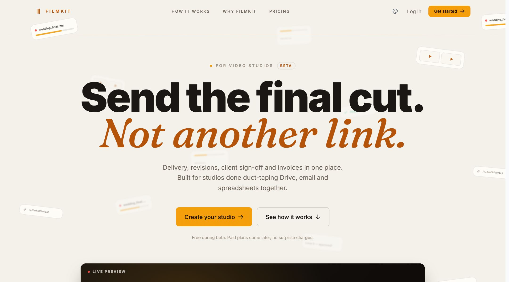

Fig 01 · filmkit.studio

FilmKit
Unit 01 // SaaS · solo buildStudio management for video production teams who are currently duct-taping Drive, email and spreadsheets together.
Delivery, revisions, client sign-off and invoicing usually live in four different places, and the handoff between them is where a production loses a week. FilmKit puts the whole chain on one job record, so a client's "can we see v3 again?" stops being an archaeology dig through a shared inbox.
- Delivery
- Versions stay attached to the job instead of the thread they were emailed in.
- Sign-off
- Approval is a recorded action, not someone saying "yep looks good" on a call.
- Invoicing
- Billing hangs off the same job record, so it doesn't get re-typed.
Betafilmkit.studio ↗